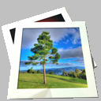

More of my Free software: Wifi Remote Play ~ Erebus RPG
Open Camera is an Open Source Camera app for Android phones and tablets. Features:
(Some features may not be available on all devices, as they may depend on hardware features, or the Android version.)
Download now from Google Play!
Open Camera is completely free, however if you wish you can show your appreciation and support future development by purchasing my donation app. You can also donate through Paypal (Paypal account not required, supports debit or credit card) or Bitcoin (Bitcoin address 1LKCFto9SQGqtcvqZxHkqDPqNjSnfMmsow). Thanks!
Open Camera Blog ~ Discussion Forums ~ Code Repository (Git)
System requirements
This requires Android 4.0 or better. I've tested this successfully on the Samsung Galaxy Nexus and Asus Nexus 7 (2013), running Android 4.3. The auto-stabilise feature may not be available if the app deems there is not enough memory (RAM) available (technical explanation: requires 128MB of "large heap").
Quickstart
Simply point, and press the blue camera icon  to take a photo. The camera
will automatically focus before taking the picture. You can also focus at any time by touching on the screen. To zoom, either
press use the zoom "-" and "+" control buttons, or do a multi-touch "pinch" gesture. You can also control via the volume keys on
your phone or tablet - by default, pressing them will take a photo, but can change this to zoom in/out from the
Settings.
to take a photo. The camera
will automatically focus before taking the picture. You can also focus at any time by touching on the screen. To zoom, either
press use the zoom "-" and "+" control buttons, or do a multi-touch "pinch" gesture. You can also control via the volume keys on
your phone or tablet - by default, pressing them will take a photo, but can change this to zoom in/out from the
Settings.
When you take a photo, the image will be displayed - to keep the photo, touch the screen (or take another photo). To delete it,
press the trash icon  . To share an image, press the share icon
. To share an image, press the share icon
 .
.
On Android, the screen display is kept on when Open Camera is running as the foreground app (if you want to switch off the display, do so on your device manually).
On-Screen User Interface
 Switch camera - Switches between front and back camera (if your
device has two cameras).
Switch camera - Switches between front and back camera (if your
device has two cameras).
 Switch to/from video - Switches between taking photo mode, and
recording video mode. When in video mode, the take photo icon will change to the record video icon
Switch to/from video - Switches between taking photo mode, and
recording video mode. When in video mode, the take photo icon will change to the record video icon
 .
.
 Flash mode - Click this to cycle through the available flash modes. Popup
text will explain what each mode is. (Only available if the camera supports flash.)
Flash mode - Click this to cycle through the available flash modes. Popup
text will explain what each mode is. (Only available if the camera supports flash.)
 Focus mode - Click this to cycle through the available focus modes.
Popup text will explain what each mode is. (Only available if the camera supports different focus modes.)
Focus mode - Click this to cycle through the available focus modes.
Popup text will explain what each mode is. (Only available if the camera supports different focus modes.)
Gallery - Click to launch the Gallery app, to view your photos (by default saved in the OpenCamera folder).
 Settings - Click to open the Settings.
Settings - Click to open the Settings.
All Android cameras will rotate the photo depending on the orientation of the camera, but only to the nearest 90 degrees - so the photos look right whether you hold the device in "portrait" or "landscape" mode. But Open Camera has the option to rotate the photos so they are perfectly level, so your shots come out looking perfectly level every time!

The above shows a rather exaggerated example - in practice, you can probably take better photos, but this feature ensures they come out perfectly level, without you having to edit them afterwards in a photo editor. Of course you won't always want this - perhaps you're going for artistic 45-degree shots - so this is an option. By default it is disabled. To enable, go to the Settings, and enable "Auto-stabilise". Note that this feature is memory intensive - it will not be available on devices with low memory. Even where it is available, there is a risk it may cause the app to fail on devices I haven't been able to test. If you do have problems, you'll have to disable the feature again.
Also note that the feature reduces the available space in the image - because rotating an image makes it no longer fit into a rectangular image, so we have to crop it. So it's still advisable to try to hold the camera reasonably level when using this feature.
Auto-stabilise - Enable the auto-stabilise features for photos (see above). (Only available if the device has enough memory.)
Apply a color effect - Choose a color effect to apply. (Only available if the camera supports color effects.)
Apply a scene mode - Choose a scene mode to apply. (Only available if the camera supports scene modes.)
Set the white balance - Choose a method to control how the white balance is set. See here for an explanation of white balance. (Only available if the camera supports different white balance settings.)
Record audio? - Whether to record audio when recording a video.
Timer - Set a timer for taking photos or recording video.
UI placement - Whether to optimise the user interface for left-handed or right-handed use.
Pause after taking photo - If ticked, after taking a photo the display will pause, with options to share or delete the photo.
Shutter sound - Whether to play a sound after taking a photo. (Requires Android 4.2 or higher to disable.)
Volume keys - You can set what happens when the volume keys are pressed: either take photo/video, zoom in/out, or just change the device's volume as normal.
Save location - Enter the folder to store the photos in. Note that specifying the full path of the folder isn't yet supported.
Show angle - Whether to display the orientation angle of the device.
Show free memory - Whether to display the remaining storage space of the device.
Camera resolution - Select the resolution of photo images taken by the camera. Note that if auto-stabilise is enabled, images will in general come out as a slightly lower resolution (due to the rotation and cropping that's required).
Image quality - The image quality of saved JPEG images. Higher means better quality, but the image files will take up more storage space.
Online help - Load this web page.
Buy full version - Loads the Google Play page for the full version (if you're using the free version).
History
Version 1.0 (2013/10/12) First release.
Contacting me (bugs etc)
Please contact me at mark dot harman at ntlworld dot com .
Licence
Open Camera is released under the GPL v3 or later. The source code is available from https://sourceforge.net/projects/opencamera/files/.
The following third party files are used in Open Camera:
{kind=link}